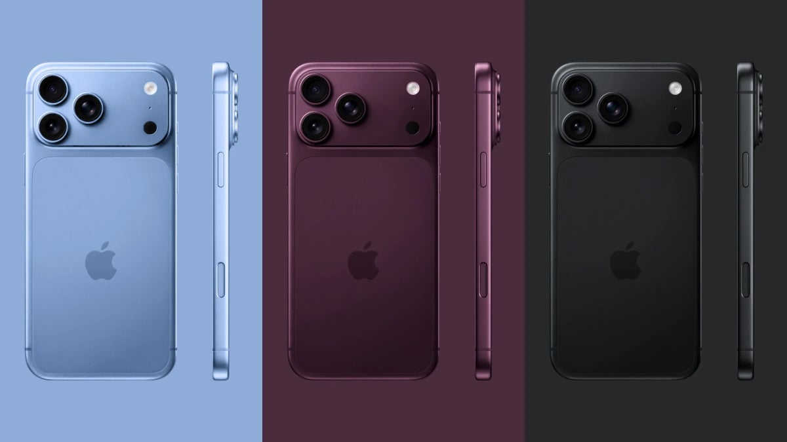
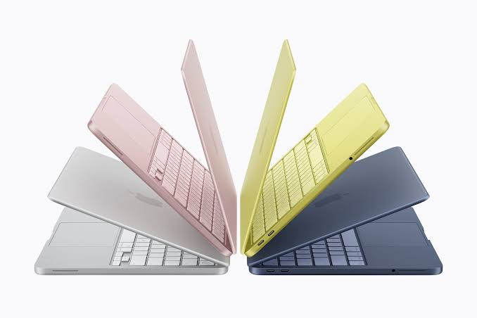
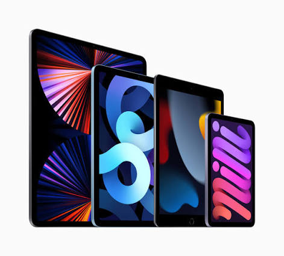
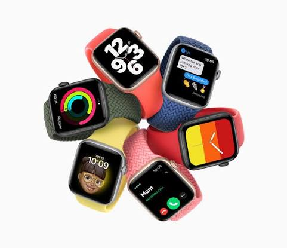
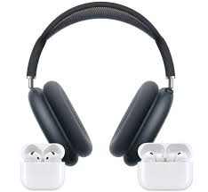
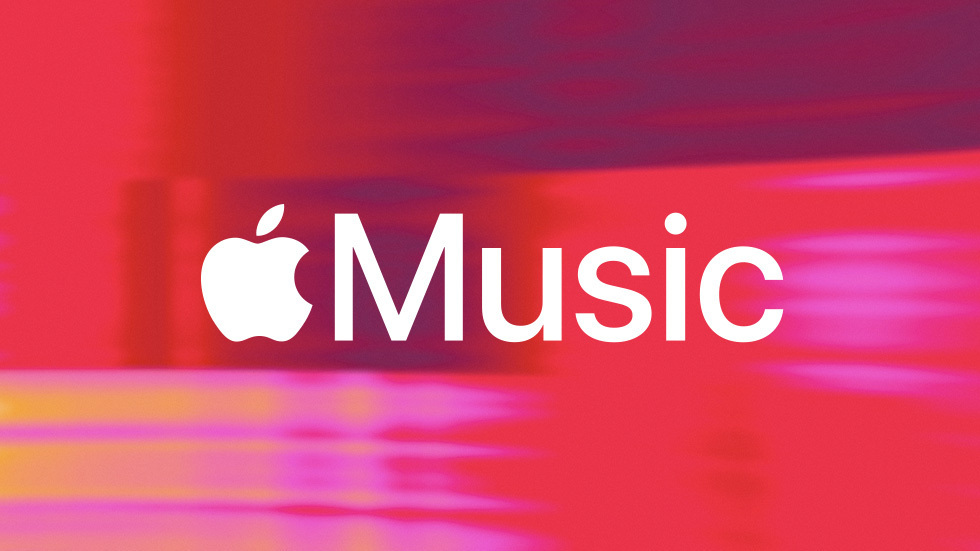

Apple just released the newest iPhone model with exciting new features and designs. New features include automatic or manual adjustment to the camera lens to improve low-lighting quality, an advanced cooling chip to sustain performance, and an extended battery life that lasts up to 45 hours of continuous use. The new iPhone is offered in multiple colors and storage options. For more information visit Apple Newsroom.

Apple's laptops are known for their sleek design and powerful performance, making them a popular choice among professionals and students alike. They feature powerful processors and have long lasting battery life. The current main models include the MacBook Neo, the MacBook Air, and the MacBook Pro. For more information, visit Apple's Mac page.

The Apple iPad comes in various sizes and configurations, making it suitable for both personal and professional use. The most common models include the iPad mini, the iPad Air, and the iPad Pro. All three options are run with the iPadOS operating system, which is designed for touch screen use and keyboard use. For more information, visit Apple's iPad page.

The Apple Watch is a smartwatch that has a variety of features, including fitness tracking, heart rate monitoring, and the ability to check and receive notifications from your iPhone. The Apple Watch is available in multiple sizes and styles, including the Apple Watch Series 12, the Apple Watch SE 3, and the Apple Watch Ultra. For more information, visit Apple's Watch page.

Apple AirPods are wireless earbuds that offer high-quality sound and seamless integration with Apple devices. They come in various models, including the AirPods Pro and AirPods Max, each offering unique features such as active noise cancellation and spatial audio. For more information, visit Apple's AirPods page.
Apple TV is a digital media player and streaming device that allows users to access a wide range of content, including movies, TV shows, and apps. It supports 4K resolution and HDR for an enhanced viewing experience. The device also integrates with other Apple services, such as Apple Music and Apple Arcade. For more information, visit Apple's TV page.

Apple Music offers a subscription for music streaming services. This offer includes ad free music with a catalog of over 100 million songs. It offers offline listening so an individual can listen to music without wifi. It also includes a Live Radio and personalized recommendations. For more information, visit Apple Music Page.